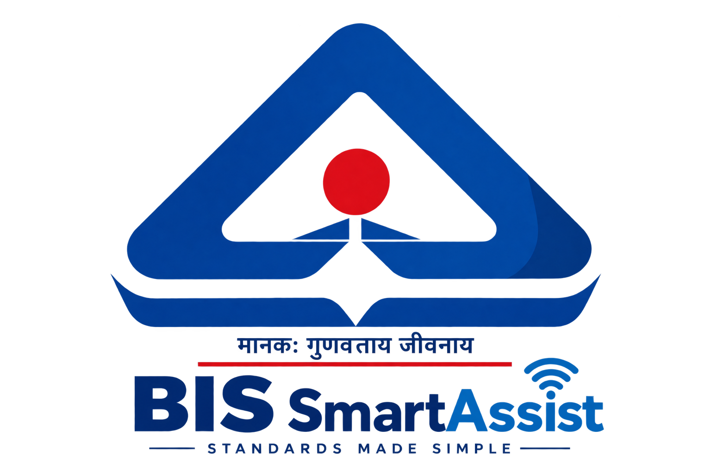

BIS SmartAssist • SIH Prototype
Search Indian Standards using an IS number, product name or keyword. SmartAssist can help you understand the relevant standard and guide you to official BIS information.
Example: water, cement, electrical, or an IS number.
Ask BIS SmartAssist in natural language. For example: "Which standard should I check for drinking water?"